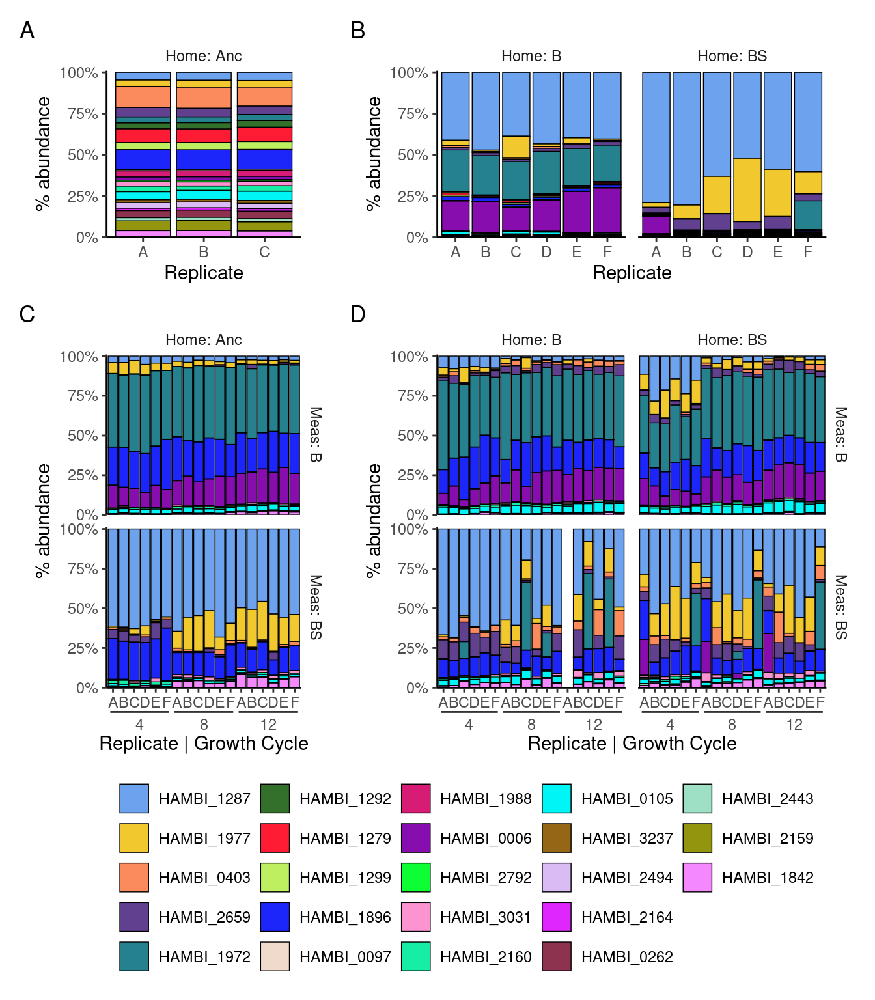
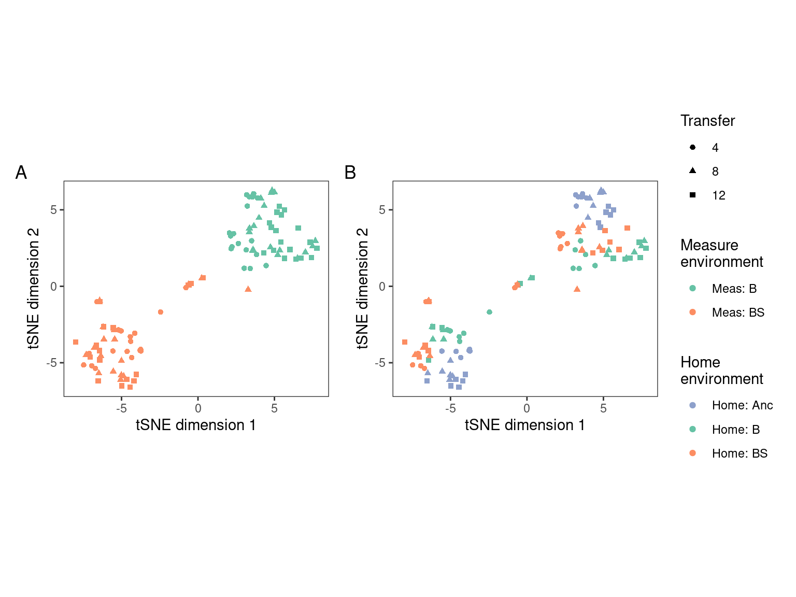
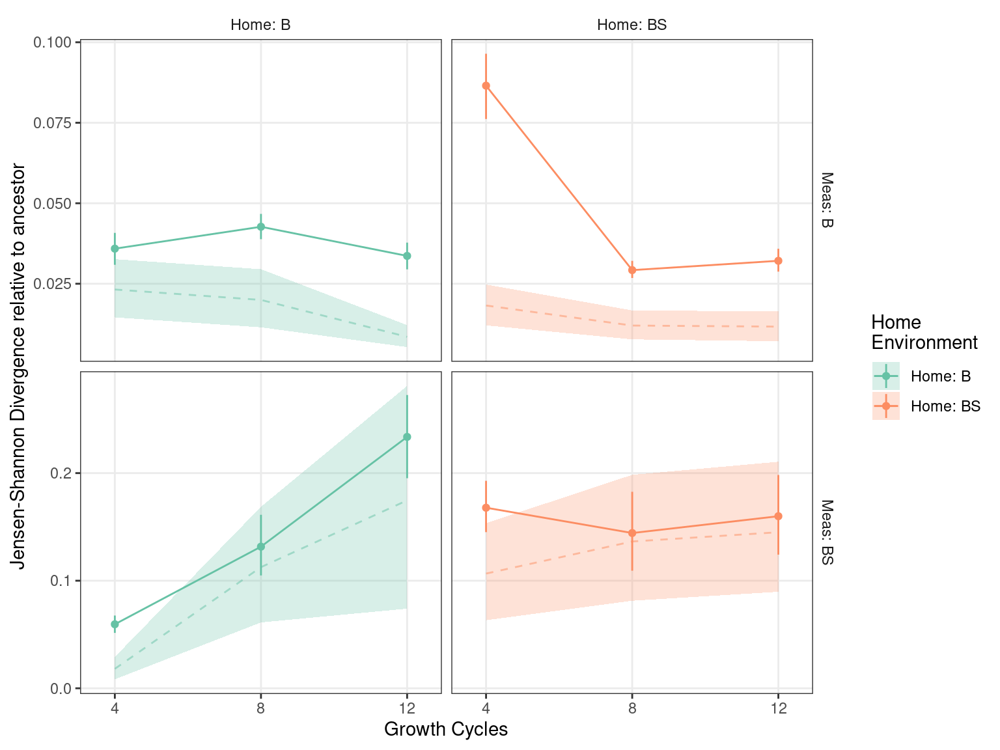
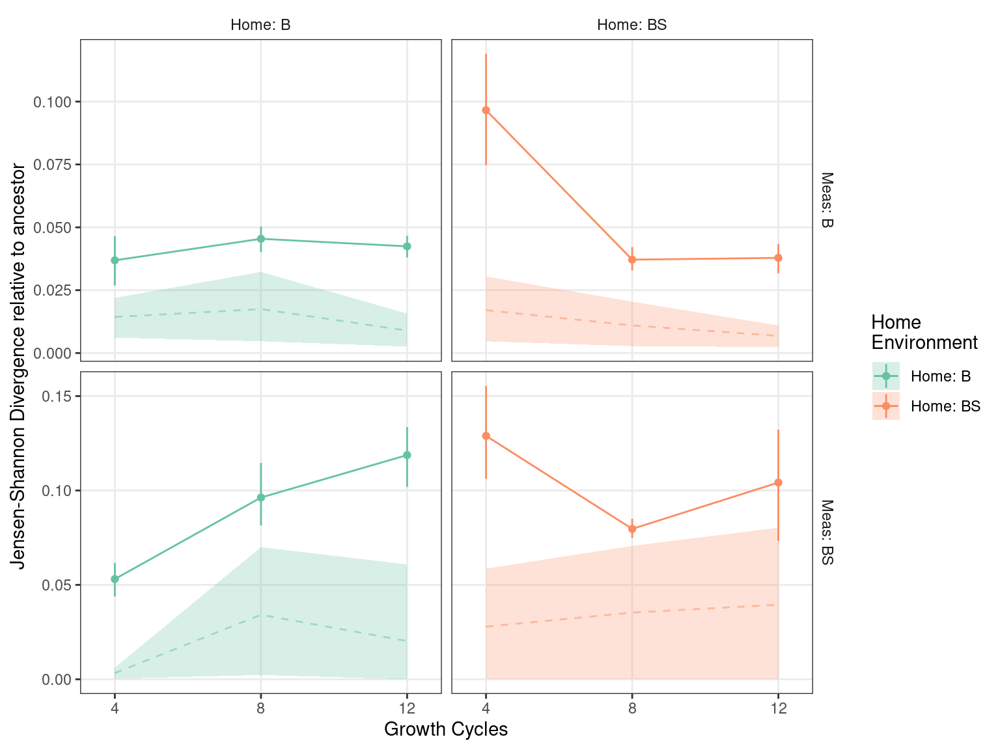
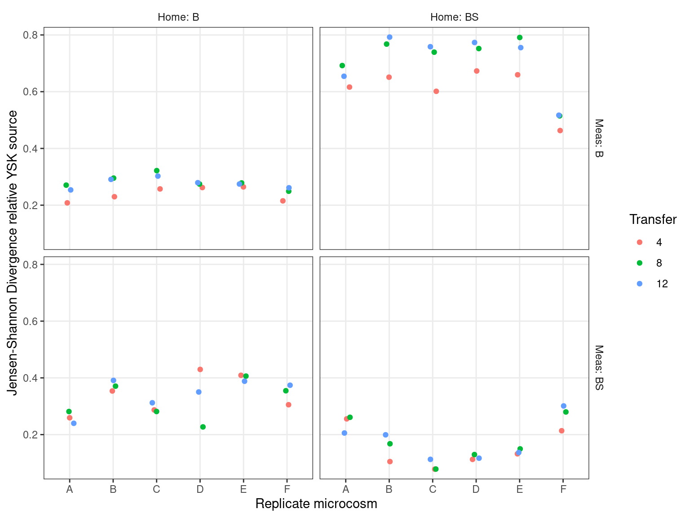

Analysis of community compositions
From the STR community composition workflow
1 Setup
Loads required libraries and sets global variables
2 Read
Read species abundance data (16S v3 amplicon counts) and do some light formatting of metadata
Show/hide code
sptable <- readr::read_tsv(here::here(data_sp, "species_counts_md.tsv")) %>%
dplyr::mutate(transfer = day/7)
counts_f <- sptable %>%
dplyr::group_by(sample) %>%
dplyr::mutate(f=count_correct/sum(count_correct)) %>%
dplyr::ungroup() %>%
dplyr::mutate(measure_env_short = dplyr::case_when(measure_env == "bact" ~ "Meas: B",
measure_env == "bact_strep" ~ "Meas: BS")) %>%
dplyr::mutate(home_env_short = dplyr::case_when(
evolution_env == "anc" ~ "Home: Anc",
evolution_env == "bact" ~ "Home: B",
evolution_env == "bact_strep" ~ "Home: BS")) %>%
dplyr::mutate(
measure_env_short = factor(measure_env_short, levels = c("Meas: B", "Meas: BS")),
home_env_short = factor(home_env_short, levels = c("Home: Anc", "Home: B", "Home: BS")),
day = factor(day),
replicate = factor(replicate),
strainID = factor(strainID, levels = names(hambi_colors)))3 Formatting
Some light formatting to subset data into distint tibbles for later plotting
Show/hide code
# these are communities of a (supposedly) known composition. Can be used with metacal
pos_ctrl_samples <- counts_f %>%
dplyr::filter(str_detect(sample, "pos_ctrl"))
# these are samples taken directly from YSK and represent the composition of the communities used to start the experiment
t0_samples <- counts_f %>%
dplyr::filter(!str_detect(sample, "pos_ctrl")) %>%
dplyr::filter(day == 0)
# only samples from the experiment
counts_f_experiment <- dplyr::anti_join(counts_f, pos_ctrl_samples) %>%
dplyr::anti_join(., t0_samples) %>%
dplyr::mutate(
measure_env_short = factor(measure_env_short, levels = c("Meas: B", "Meas: BS")),
home_env_short = factor(home_env_short, levels = c("Home: Anc", "Home: B", "Home: BS")),
day = factor(day),
replicate = factor(replicate),
strainID = factor(strainID, levels = names(hambi_colors)))4 Visualize community composition
Using ggplot2 to plot bar plots of species composition from the experiment and the intial material used to seed the experiment
Show/hide code
# custom barplot theme
mybartheme <- function(...){
ggplot2::theme(
panel.spacing = unit(0.5,"line"),
strip.placement = 'outside',
strip.background = element_blank(),
panel.grid = element_blank(),
panel.border = element_blank(),
panel.background = element_blank(),
#axis.text.x = element_blank(),
axis.line.x = element_line(color = "black"),
axis.line.y = element_line(color = "black"),
legend.title = element_blank(),
legend.background = element_blank(),
legend.key = element_blank(),
legend.position = "bottom",
...)
}
# Base function for making the subplots
basebar <- function(.data, x = x, xlab = xlab, xgrid = NULL){
ggplot2::ggplot(.data) +
ggplot2::geom_bar(aes(y = f, x = {{ x }}, fill = strainID), color="black", linewidth=0.25, stat="identity") +
ggplot2::labs(x = xlab, y="% abundance", fill="") +
ggplot2::scale_fill_manual(values = hambi_colors) +
ggplot2::scale_y_continuous(limits = c(0,1.01), expand = c(0, 0), labels = percent) +
ggplot2::scale_x_discrete(guide = ggh4x::guide_axis_nested()) +
ggplot2::theme_bw() +
mybartheme()
}
A <- t0_samples %>%
dplyr::filter(evolution_env == "anc") %>%
basebar(x = replicate, xlab = "Replicate") +
ggplot2::facet_grid( ~ home_env_short)
B <- t0_samples %>%
dplyr::filter(evolution_env != "anc") %>%
basebar(x = replicate, xlab = "Replicate") +
ggplot2::facet_grid( ~ home_env_short)
C <- counts_f_experiment %>%
dplyr::filter(evolution_env == "anc") %>%
basebar(x = interaction(replicate, transfer), xlab = "Replicate | Growth Cycle") +
ggplot2::facet_grid(measure_env_short ~ home_env_short)
D <- counts_f_experiment %>%
dplyr::filter(evolution_env != "anc") %>%
basebar(x = interaction(replicate, transfer), xlab = "Replicate | Growth Cycle") +
ggplot2::facet_grid(measure_env_short ~ home_env_short)Makes a final patchwork object and saves the results as raster and vector
Show/hide code
layout <- "
ABB
CDD
"
pbar <- A + B + C + D +
patchwork::plot_layout(guides = 'collect', heights = c(0.2, 0.4),
design = layout) +
patchwork::plot_annotation(tag_levels = 'A') &
ggplot2::theme(legend.position='bottom')
ggplot2::ggsave(
here::here(figs, "community_composition_bar_plot.svg"),
pbar,
width = 8,
height = 10,
units = "in",
device = "svg"
)
ggplot2::ggsave(
here::here(figs, "community_composition_bar_plot.png"),
pbar,
width = 8,
height = 10,
units = "in",
device = "png"
)
5 tSNE dimension reduction of community composition
Some preliminary inspections of the number of samples with zeros. This is needed for zcompositions
Show/hide code
Here we will use the centered log-ratio transformation for the species abundances. The centered log-ratio can be interpreted as the log-fold change of species i relative to the average microbe in a sample. The formula for the transformation is:
\[ \text{clr}(\mathbf x)= \left(log \frac{x_i}{g(\mathbf x)} \right)_{i=1,...,D} \qquad \text{with} \quad g(\mathbf x) = \left(\prod_{i=1}^Dx_i\right)^{1/D} = \exp\left(\frac{1}{D}\sum_{i=1}^D \log x_i\right)\text{,} \tag{1}\]
We will use the implementation of centered log-ratio transform in the compositions package
Show/hide code
set.seed(234781)
# exclude these species because they have too many zeros
lowstrainsv <- c(
"HAMBI_0097",
"HAMBI_2792"
)
# make a species count matrix
mymat <- counts_f_experiment %>%
dplyr::filter(!(strainID %in% lowstrainsv)) %>%
dplyr::select(sample, strainID, count) %>%
dplyr::mutate(count = count + 1) %>%
# important to arrange by sample as this makes some later joins easier
dplyr::arrange(sample) %>%
tidyr::pivot_wider(names_from = "strainID", values_from = "count") %>%
tibble::column_to_rownames(var = "sample") %>%
data.frame()
# calculate clr
balclr <- compositions::clr(mymat)
# tsne
mymat_tsne <- Rtsne::Rtsne(as.matrix(balclr), perplexity = 30, dims = 2)Define a plotting function to plot the tSNE output
Show/hide code
ptsne <- function(tsne_obj, colorvar, shapevar, colors){
data.frame(tsne_obj$Y) %>%
cbind(dplyr::distinct(dplyr::select(counts_f_experiment, sample, replicate, transfer, measure_env_short, home_env_short))) %>%
mutate(transfer = factor(transfer)) %>%
ggplot2::ggplot() +
ggplot2::geom_point(aes(x= X2, y = X1, color = {{ colorvar }}, shape = {{ shapevar }}), alpha = 1) +
ggplot2::scale_y_continuous(breaks = c(5, 0, -5)) +
ggplot2::coord_fixed() +
ggplot2::labs(x = "tSNE dimension 1",
y = "tSNE dimension 2",
shape = "Transfer") +
ggplot2::scale_color_manual(values = colors) +
ggplot2::theme_bw() +
ggplot2::theme(
panel.grid.major = element_blank(),
panel.grid.minor = element_blank(),
panel.background = element_blank(),
strip.placement = 'outside',
strip.background = element_blank(),
)
}Call the plotting function, make the patchwork layout, and save in raster and vector format
Show/hide code
pm <- ptsne(mymat_tsne, measure_env_short, shapevar = transfer, c("#66c2a5", "#fc8d62")) +
ggplot2::labs(color = "Measure\nenvironment")
ph <- ptsne(mymat_tsne, home_env_short, shapevar = transfer, c("#8da0cb", "#66c2a5", "#fc8d62")) +
ggplot2::labs(color = "Home\nenvironment")
pt <- pm + ph +
patchwork::plot_layout(guides = 'collect', ncol = 2) +
patchwork::plot_annotation(tag_levels = 'A')
ggplot2::ggsave(
here::here(figs, "community_composition_tsne.svg"),
pt,
width = 8,
height = 6,
units = "in",
device = "svg"
)
ggplot2::ggsave(
here::here(figs, "community_composition_tsne.png"),
pt,
width = 8,
height = 6,
units = "in",
device = "png"
)
6 Distances between communities
The Jensen–Shannon divergence (JSD) is a symmetrized and smoothed version of the Kullback–Leibler divergence. It is defined as:
\[ D_{\text{JS}}(P \parallel Q) = \frac{1}{2} D_{\text{KL}}(P \parallel M) + \frac{1}{2} D_{\text{KL}}(Q \parallel M) \tag{2}\]
\[ M = \frac{1}{2}(P + Q) \tag{3}\]
Here, (\(D_{\text{KL}}\)) denotes the Kullback-Leibler divergence which is defined as:
\[ D_{KL}(P \parallel Q) = \sum_{x \in \mathcal{X}} P(x) \log \frac{P(x)}{Q(x)} \tag{4}\]
6.1 JSD to ancestor no samples filtered
Show/hide code
# create a matrix of species frequencies
prob_mat <- counts_f %>%
dplyr::select(sample, strainID, f) %>%
tidyr::pivot_wider(names_from = strainID, values_from = f) %>%
tibble::column_to_rownames(var = "sample") %>%
as.matrix()
# calculate JSD between all pairs using philentropy::JSD
jsd_mat <- philentropy::JSD(prob_mat)
# get nonredundant pairings
ind <- which(upper.tri(jsd_mat, diag = TRUE), arr.ind = TRUE)
nn <- list(rownames(prob_mat), rownames(prob_mat))
jsddf <- data.frame(sample.x = nn[[1]][ind[, 1]],
sample.y = nn[[2]][ind[, 2]],
jsd = jsd_mat[ind])
# metadata for joining
md <- dplyr::distinct(counts_f, sample, replicate, transfer, measure_env_short, home_env_short)
# convert to long format
jsddf_long_md <- jsddf %>%
dplyr::left_join(md, by = join_by(sample.x==sample)) %>%
dplyr::left_join(md, by = join_by(sample.y==sample))Filter JSD pairs to only those that are relative to ancestral community in each measurement environment. Also calculate mean and boostrapped 95CI using HMisc
Show/hide code
jsddf_long_md_filt <- jsddf_long_md %>%
dplyr::filter(measure_env_short.x == measure_env_short.y) %>%
dplyr::filter(home_env_short.x != home_env_short.y & transfer.x == transfer.y & home_env_short.x == "Home: Anc") %>%
dplyr::summarize(ggplot2::mean_cl_boot(jsd), .by=c(transfer.y, home_env_short.y, measure_env_short.y)) %>%
dplyr::mutate(home_env_short.y = factor(home_env_short.y))Hmmm…. not sure what exactly this is telling, but I am calculating the within home/measurement divergence as some kind of variability baseline.
Show/hide code
intrarepvar <- jsddf_long_md %>%
dplyr::filter(measure_env_short.x == measure_env_short.y & home_env_short.x == home_env_short.y & transfer.x == transfer.y) %>%
dplyr::summarize(ggplot2::mean_cl_boot(jsd), .by=c(transfer.y, home_env_short.y, measure_env_short.y)) %>%
dplyr::filter(home_env_short.y != "Home: Anc") %>%
dplyr::mutate(home_env_short.y = factor(home_env_short.y))Make plot of JSD to ancestral communities in each condition and save in raster/vector format
Show/hide code
plot_jsd <- function(intra_df, df){
mycols <- c("Home: B" = "#66c2a5", "Home: BS" = "#fc8d62")
ggplot2::ggplot() +
ggplot2::geom_ribbon(data = intra_df,
aes(x = transfer.y, ymin = ymin, ymax=ymax, fill = home_env_short.y), alpha=0.25) +
ggplot2::geom_line(data = intra_df,
aes(x = transfer.y, y=y, color = home_env_short.y), alpha=0.5, lty=2) +
ggplot2::geom_point(data = df, aes(x = transfer.y, y = y, group = home_env_short.y, color = home_env_short.y)) +
ggplot2::geom_linerange(data = df,
aes(x = transfer.y, ymin = ymin, ymax = ymax, color = home_env_short.y)) +
ggplot2::geom_line(data= df,
aes(x = transfer.y, y = y, group = home_env_short.y, color = home_env_short.y)) +
ggplot2::facet_grid(measure_env_short.y ~ home_env_short.y, scales = "free_y") +
ggplot2::labs(x = "Growth Cycles", y = "Jensen-Shannon Divergence relative to ancestor", color = "Home\nEnvironment", fill = "Home\nEnvironment") +
#ggplot2::scale_y_sqrt() +
ggplot2::scale_x_continuous(breaks = c(4, 8, 12), limits = c(3.5, 12.5)) +
ggplot2::scale_color_manual(values=mycols) +
ggplot2::scale_fill_manual(values=mycols) +
ggplot2::theme_bw() +
ggplot2::theme(
#panel.grid.major = element_blank(),
panel.grid.minor = element_blank(),
panel.background = element_blank(),
strip.placement = 'outside',
strip.background = element_blank(),
)
}Show/hide code

6.2 JSD to ancestor - idiosyncratic samples filtered
In Figure 1 is it clear that some of the replicates in samples from YSK have a very different composition from the others. This is likely due to rapid resistance evolution of HAMBI 1972 in those particular replicates from YSK (will need to verify with the metagenomes). HAMBI_1972 is normally very sensitive to STR. The idea in this section is to repeat the JSD to ancestor analysis but exclude these idiosyncratic replicates - A and F from YSK BS, C and E from YSK B. We want to make sure that the trends in JSD relative to the ancestral community is not being driven primarily by these outlier replicates.
Filter JSD pairs to only those that are relative to ancestral community in each measurement environment. Also exclude the replicates mentioned above. Finally calculate mean and boostrapped 95CI using HMisc.
Show/hide code
jsddf_long_md_filt2 <- jsddf_long_md %>%
dplyr::filter(measure_env_short.x == measure_env_short.y) %>%
dplyr::filter(home_env_short.x != home_env_short.y & transfer.x == transfer.y & home_env_short.x == "Home: Anc") %>%
dplyr::filter(!((measure_env_short.x == "Meas: BS" & home_env_short.y == "Home: BS") & str_detect(replicate.x, "A|F") | str_detect(replicate.y, "A|F"))) %>%
dplyr::filter(!((measure_env_short.x == "Meas: BS" & home_env_short.y == "Home: B") & str_detect(replicate.x, "C|E") | str_detect(replicate.y, "C|E"))) %>%
dplyr::summarize(ggplot2::mean_cl_boot(jsd), .by=c(transfer.y, home_env_short.y, measure_env_short.y)) %>%
dplyr::mutate(home_env_short.y = factor(home_env_short.y))Calculating the within home/measurement divergence as some kind of variability baseline but with the outlier replicates excluded.
Show/hide code
intrarepvar2 <- jsddf_long_md %>%
dplyr::filter(measure_env_short.x == measure_env_short.y & home_env_short.x == home_env_short.y & transfer.x == transfer.y) %>%
dplyr::filter(!((measure_env_short.x == "Meas: BS" & home_env_short.y == "Home: BS") & str_detect(replicate.x, "A|F") | str_detect(replicate.y, "A|F"))) %>%
dplyr::filter(!((measure_env_short.x == "Meas: BS" & home_env_short.y == "Home: B") & str_detect(replicate.x, "C|E") | str_detect(replicate.y, "C|E"))) %>%
dplyr::summarize(ggplot2::mean_cl_boot(jsd), .by=c(transfer.y, home_env_short.y, measure_env_short.y)) %>%
dplyr::filter(home_env_short.y != "Home: Anc") %>%
dplyr::mutate(home_env_short.y = factor(home_env_short.y))Make plot of JSD to ancestral communities in each condition and save in raster/vector format

So here it does appear that the trends still hold but now the JSD to ancestor always exceeds variation within each environment/evolutionary history.
6.3 JSD to YSK founder community
Here I just wanted to check how each community with an YSK evolutionary history compares to the original YSK source material
Show/hide code
jsddf_long_md %>%
dplyr::filter(transfer.x == 0 | transfer.y == 0) %>%
dplyr::filter(home_env_short.x != "Home: Anc") %>%
dplyr::filter(str_remove(measure_env_short.y, "Meas: ") == str_remove(home_env_short.y, "Home: ")) %>%
#dplyr::filter(home_env_short.x == home_env_short.y) %>%
dplyr::filter(replicate.x == replicate.y) %>%
ggplot(aes(x= replicate.x, y = jsd)) +
geom_jitter(aes(color = factor(transfer.y)), height = 0.01, width = 0.1) +
facet_grid(measure_env_short.y ~ home_env_short.x) +
ggplot2::labs(x = "Replicate microcosm", y = "Jensen-Shannon Divergence relative YSK source", color = "Transfer") +
ggplot2::theme_bw() +
ggplot2::theme(
panel.grid.minor = element_blank(),
panel.background = element_blank(),
strip.placement = 'outside',
strip.background = element_blank(),
)